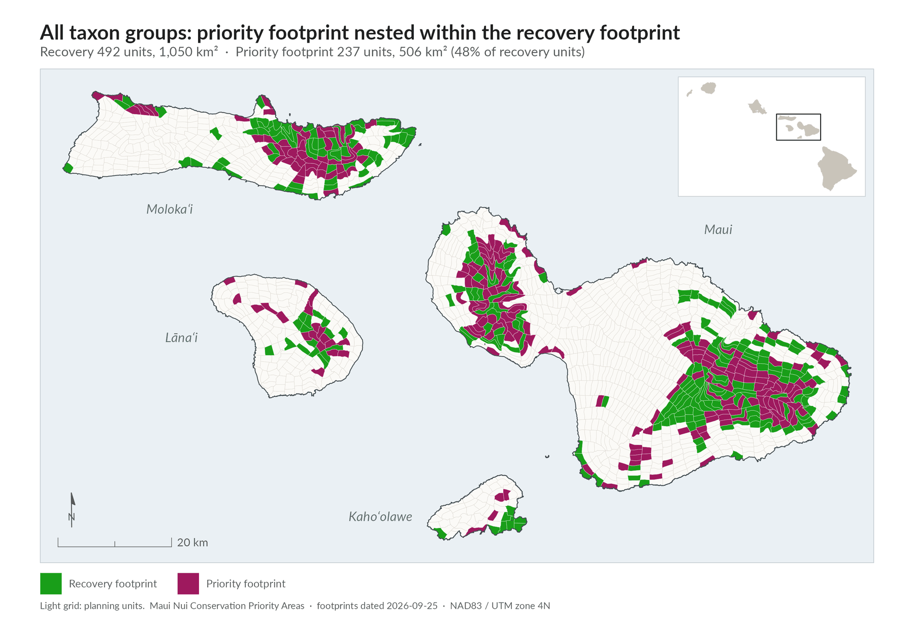
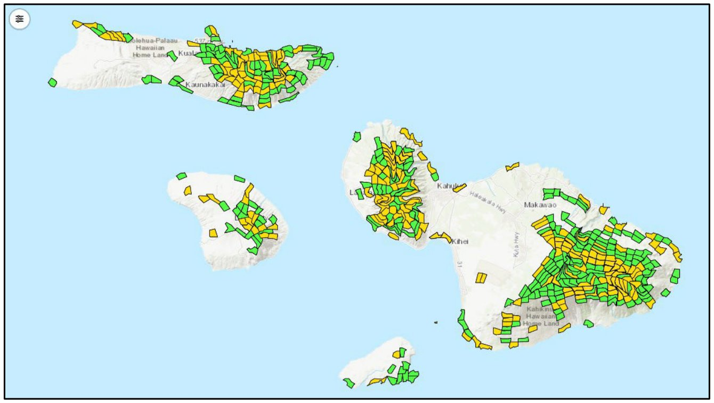
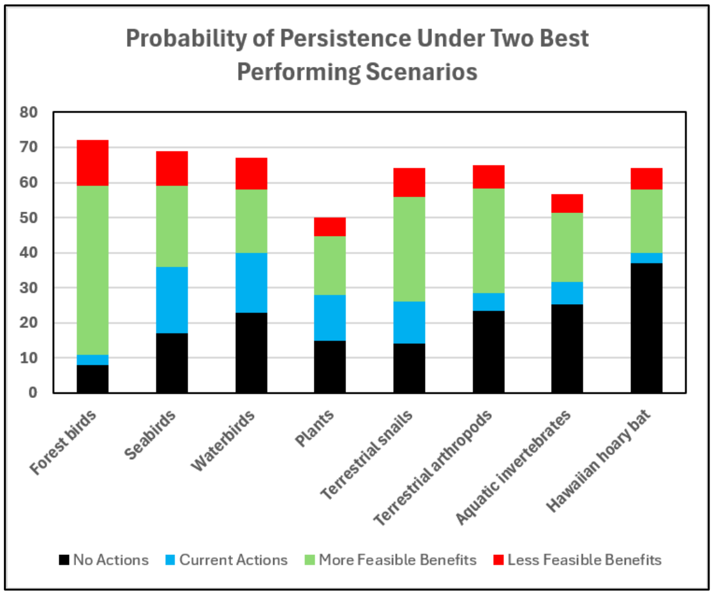
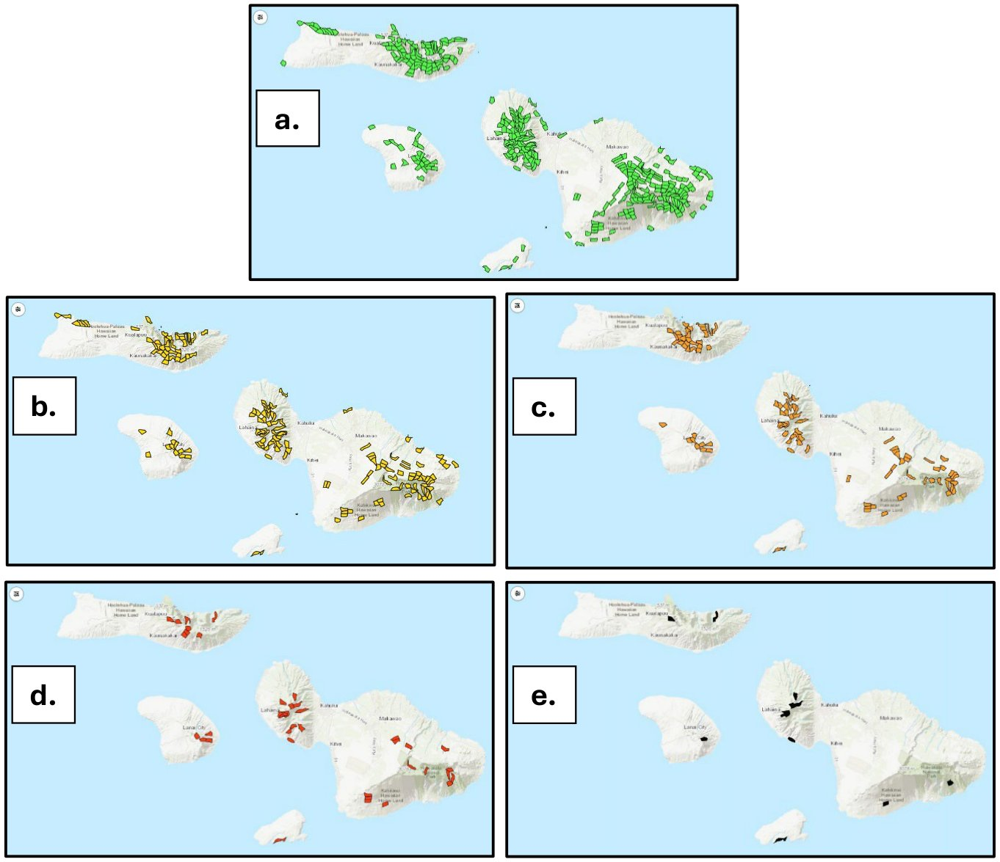

What the MNLCP provides
The plan gives managers three kinds of guidance.plan p.20, lines 1006-1018
- Emergency actions to prevent imminent extinctions. These are mapped where possible.plan p.20, lines 1007-1008
- Recovery actions to bring at-risk species to healthy, self-sustaining population levels. Where possible, the plan maps both the habitat each species needs and the actions to take there. Species that lack the distribution or other information needed for mapping are targeted for surveys and studies. Their results will feed updates to the MNLCP. The aim is to identify habitat needs and conservation strategies for all 442 at-risk species.plan p.20, lines 1009-1016
- Ecosystem conservation assessments and actions, and the key areas that represent protection needs and conservation opportunities.plan p.20, lines 1017-1018
Learn how the at-risk species were identified · See the ecosystem priorities
Emergency actions to prevent extinction
Species experts identified emergency actions or programs to prevent imminent extinctions in Forest birds, Plants, Terrestrial snails, Terrestrial arthropods, and Aquatic invertebrates.plan p.20, lines 1022-1024 Managing species in the wild (in situ) is usually preferred. But in situ work alone may not prevent extinction when the threat is a hard-to-detect invasive species, disease, extremely low numbers, or events that cannot be controlled, like climate change.plan p.20, lines 1024-1026
Some emergency actions are land management in specific places. Others are research, or are not yet tied to particular sites.plan p.20, lines 1028-1030 Each taxonomic group page gives more detail.plan p.20, lines 1030-1031
Native Maui Nui species facing imminent extinction and the conservation actions needed immediately (plan Table 2, p.20-21)
| Taxonomic group | At-risk species | Facing imminent extinction | Emergency actions to prevent extinction |
|---|---|---|---|
| Forest birds | 4 | 2 | Reduce mosquito and avian malaria transmission in priority zones; translocation to another island |
| Waterbirds | 5 | 0 | None needed |
| Seabirds | 3 | 0 | None needed |
| Plants | 197 | 102 | Collect genetic material; propagation; outplanting; surveys; control local threats |
| Terrestrial snails | 49 | 49 | Establish snail exclosures; captive propagation; Euglandina control research |
| Terrestrial arthropods | 172 | 9 | Habitat management; fencing |
| Aquatic invertebrates | 11 | 1 | Protect the only known site; survey; prevent invasive species introductions |
| Hawaiian hoary bat | 1 | 0 | None needed |
| Total | 442 | 163 |
Emergency actions are chosen for how well and how quickly they work. They often rely on captive rearing, seed storage, or very small predator-proof exclosures.plan p.16, lines 888-890
Where to work: habitat and spatial needs
The MNLCP recovery footprints identify the planning units (PUs, mapping cells of about 2 km²) that contain existing or restorable habitat at-risk species need to reach their recovery goals.plan p.21, lines 1063-1064; PU size p.vi line 228 Priority footprints pick out the most important areas to manage in the near term. Other areas follow in mid-term or later work.plan p.21, lines 1065-1067
Combined across all eight taxonomic groups, the recovery footprint covers a significant portion of Maui Nui. It holds the habitat needed to recover, or significantly advance the recovery of, all 442 at-risk species except those still lacking distribution or habitat information.plan p.21, lines 1068-1071

Map as printed in the plan (Figure 2)Details

Terrestrial snails are the exception. The snail team determined that all 49 at-risk snails face imminent extinction. For now, the plan prioritizes preventing those losses with a number of snail exclosures (kīpuka kāhuli) rather than broader habitat recovery, which is not yet possible. Critical recovery work continues, especially research on controlling invasive predators and building supporting infrastructure.plan p.21, lines 1071-1079
Open the conservation footprints map
What to do: conservation actions
The action prioritization effort (Priority Threat Management, or PTM, led by UH Mānoa) assessed the expected benefits of 27 conservation strategies: 17 single-focus strategies and 10 combinations of them (S18-S27). Each strategy was assessed for each species group.plan p.22, lines 1089-1096; team lead p.v lines 150-152 The analysis covered all eight MNLCP groups. It also split some groups into finer subgroups: 6 for Plants, 3 for Terrestrial arthropods, and 3 for Aquatic invertebrates.plan p.22, lines 1100-1103
The goal: a 50 percent chance of persistence
Persistence means the probability that a species group has viable, self-sustaining populations over 20 years. For many Hawaiian species this is hard to reach. The MNLCP's target is at least a 50 percent probability of persistence for each species group.plan p.23, lines 1110-1114
No single strategy reached 50 percent for every group. Implementing the two best-performing combination strategies together gave the best outcomes for all eight groups:plan p.23, lines 1116-1120
- S25, a suite focused on Plants and invertebrates, and
- S27, a suite focused on birds and the bat.plan p.23-24, lines 1118-1119, 1133-1135
S25 and S27 are the only combinations that include future ungulate fencing (S3), terrestrial habitat management (S5), and wetland management (S6). Choosing both means all 17 single-focus strategies get implemented.plan p.24, lines 1122-1129
Single-focus strategies and their place in combination strategies S25 and S27 (plan Table 3, p.23-24)
| Strategy | Actions | In S25 | In S27 |
|---|---|---|---|
| S1 | No actions | — | — |
| S2 | Existing ungulate fences | Yes | Yes |
| S3 | Future ungulate fences | Yes | Yes |
| S4 | Ungulate control outside fences | Yes | Yes |
| S5 | Terrestrial habitat management | Yes | Yes |
| S6 | Stream / wetland habitat management | Yes | Yes |
| S7 | Invasive vertebrate predator control | Yes | Yes |
| S8 | Invasive invertebrate pest control | Yes | Yes |
| S9 | Existing predator exclusion fences | Yes | Yes |
| S10 | Future predator exclusion fences | Yes | Yes |
| S11 | Landscape-scale rodent suppression | Yes | Yes |
| S12 | Existing tools for rare plants & inverts | Yes | — |
| S13 | Future tools for rare plants & inverts | Yes | — |
| S14 | Avian disease prevention | — | Yes |
| S15 | Future tools for avian malaria | — | Yes |
| S16 | Modification & minimization of infrastructure | — | Yes |
| S17 | Vertebrate health recovery & rehabilitation | — | Yes |
What the results show
If every action in S25 and S27 were carried out and worked, every group could reach a 50 percent likelihood of persistence. Species experts judged some actions less feasible, so their expected benefits were reduced to reflect that.plan p.24, lines 1161-1168 Overall:
- Taking no action leaves most species groups with a very low probability of persistence.
- Current actions help, but only a little for many groups. They help Seabirds and Waterbirds most.
- Feasible actions significantly improve persistence for each species group.
- Forest birds have the lowest persistence today, even with current efforts, but also the most to gain from conservation action.
- Plants are the group least likely to reach 50 percent persistence.plan p.24-25, lines 1170-1186

See the full strategy explorer on the Priority Actions page
When to act: sequencing
The Taxonomic Teams also looked at how best to carry out the individual actions in S25 and S27. Order matters, because some actions give more benefit than others and some must be finished before others can start.plan p.25, lines 1196-1201 Before a key reintroduction, for example, a team may need to:
- identify key threats, such as diseases or ungulates, and how to control them (and develop control methods if none exist)
- put in fire breaks, if needed
- collect seeds for restoration
- fence the area
- remove ecosystem threats like ungulates
- remove weeds
- propagate the species for reintroduction
- reestablish and restore a native community, which could take years
- provide short-term irrigation or threat control
- reintroduce the speciesplan p.25-26, lines 1201-1215
Aquatic systems follow similar steps, such as restoring stream flows, removing invasive predators, installing predator barriers, and captive rearing before a translocation.plan p.26, lines 1216-1218
As a general rule, start with the actions that give the greatest conservation benefit. But there are good reasons to adjust the order:plan p.29, lines 1343-1344
- Synergy. Some actions do much more together than alone. Ungulate fencing paired with weed control delivers considerably more benefit than either alone.plan p.29, lines 1344-1347
- Timing. Habitat restoration may have to come first to set the stage for a later reintroduction.plan p.29, lines 1347-1349
- Readiness and cost. A highly cost-effective, medium-priority action that is ready now may be worth doing before a higher-benefit action that will not be field-ready for several years.plan p.29, lines 1349-1352
Recommended sequences for each group are on the taxonomic group pages.plan p.26, lines 1220-1222
How the products fit together
Maui Nui's 442 at-risk species are not all equally imperiled. Some are down to a single individual that could die today. Others number in the thousands and may have a decade or more. Every one needs action, and the MNLCP recommends actions for all of them, but the urgency varies widely.plan p.26, lines 1227-1232 For species not facing imminent extinction, the plan works at the planning-unit, population, and ecosystem levels to identify the habitat and actions that will advance their recovery over the life of the plan.plan p.26, lines 1234-1237
The who, what, when, and where of conservation (plan Ch 5e, p.29)
| Question | MNLCP product |
|---|---|
| Who needs management? | The at-risk species lists |
| Where to focus management? | The recovery footprints |
| What needs to be done? | The Priority Threat Management analyses |
| When do actions need to be done? | The species facing imminent extinction, plus the recommended sequencing of actions |
Levels of conservation footprint
Recovery footprints were developed by the spatial prioritization team (led by USGS) together with the Taxonomic Teams. They show the areas likely to support the number of populations needed for recovery.plan p.26, lines 1239-1241; team lead p.v line 150 Within them, priority footprints flag the most important areas. For some groups, even the priority footprint is too large to manage all at once, so it was narrowed further into near-term work objectives or special actions.plan p.26-27, lines 1241-1248 Each group has spatial habitat maps at these levels:
- Full recovery footprint: provides enough habitat for recovery.
- Priority recovery footprint: the most important recovery areas.
- Initial implementation footprint: suggested starting points for conservation work.plan p.27, lines 1248-1254
Worked example: narrowing the plant footprintDetails
The plant recovery footprint covers 317 planning units. The plant priority footprint covers 155 planning units and holds habitat for three populations of each species.plan p.27, lines 1256-1259
The Adaptive Conservation Planner (ACP) was then used to narrow the plant priority footprint in three steps:plan p.27, lines 1261-1262
- From all 195 at-risk Plants with habitat data to the 101 PEPP species (Plants facing imminent extinction) with habitat data.
- Then to PEPP species with three or fewer known occupied planning units.
- Finally, to PEPP species with a single known occupied planning unit.plan p.27, lines 1264-1270
How far to narrow depends on how urgently action is needed and what resources are available. In this example, the initial implementation footprint for Plants is Option 5 (PEPP species with only one known occupied planning unit). Option 4 (three or fewer) would follow soon after.plan p.27, lines 1272-1278 The full recovery footprint, with up to 10 populations of each of the 195 Plants, remains the desired end outcome. The narrower options are priorities for getting started, not long-term recovery targets.plan p.28, lines 1294-1297
Alternatives for narrowing plant priority areas for initial implementation (plan Table 4, p.27)
| Option | Description | PUs | Area (km²) | Target species | PEPP species | Non-PEPP species | Total species |
|---|---|---|---|---|---|---|---|
| 1 | Full recovery | 317 | 675 | 195 | 101 | 94 | 195 |
| 2 | Priority | 155 | 325.5 | 195 | 101 | 94 | 161 |
| 3 | Priority PEPP | 98 | 204 | 101 | 101 | 78 | 175 |
| 4 | PEPP 1-3 pops | 39 | 83 | 36 | 68 | 52 | 120 |
| 5 | PEPP only 1 pop | 12 | 26 | 14 | 21 | 19 | 50 |

Fine-scale implementation
In most cases, the MNLCP maps habitat and actions at the planning-unit level. Field teams decide the exact sites within each planning unit.plan p.29, lines 1364-1366 The MNLCP also provides implementation tools for this finer "within PU" planning. The Adaptive Conservation Planner (ACP) will be able to show the location of species occurrences, quality habitat, potential recovery sites, where climate seems to be changing fastest, and where certain microhabitats may be found within a planning unit.plan p.29-30, lines 1366-1373
Used together with the ACP, the MNLCP is meant to be a living system. Managers can update or change it as circumstances, funding, opportunities, and information change. It supports both long-range planning and yearly implementation decisions.plan p.30, lines 1375-1380
Learn about the Adaptive Conservation Planner and other tools
How a manager would use the MNLCP
This walk-through puts the plan's guidance in order. It follows the steps Chapter 5 of the plan describes.
- Start with who needs help. Check the at-risk species list for the species on the lands you manage, and note which face imminent extinction. The at-risk lists answer "who needs management".plan p.29, lines 1355-1356 Browse the species explorer
- Act on species facing imminent extinction. Use the emergency actions for each group (Table 2 above). Every species facing imminent extinction receives actions to prevent its extinction, whatever its recovery or survey category. Knowing which species face imminent extinction is part of deciding "when actions need to be done".plan p.16-17, lines 893-896; p.20-21, Table 2; p.29, lines 1358-1359
- Find where to work. Look at the recovery footprint for each group, which answers "where to focus management". Use the priority footprint for near-term work and the initial implementation footprint as a starting point.plan p.21, lines 1063-1067; p.27, lines 1248-1254
- Narrow the area to fit your urgency and resources. If even the priority footprint is too large to manage at once, narrow it further, as the plant example shows.plan p.26-27, lines 1243-1248, 1272-1274
- Choose what to do. Draw on the actions in strategies S25 and S27 from the Priority Threat Management analysis, the "what needs to be done" part of the plan.plan p.28-29, lines 1323-1330
- Decide when. Follow the recommended sequence for each group. Generally start with the highest-benefit actions. Adjust for synergies, for steps that must come first, and for cost-effective actions that are ready now.plan p.29, lines 1337-1352
- Plan within planning units. Use the Conservation Planner's finer-scale information to site actions in the field.plan p.29-30, lines 1363-1373
- Fill data gaps. For species without recovery footprints, support area surveys and species-specific surveys. Their results will be added to the MNLCP.plan p.18, lines 959-961; p.20, lines 1012-1015
- Update as you go. Treat the MNLCP as a living system. Revisit priorities as funding, circumstances, opportunities, and information change, both for long-range planning and for yearly implementation decisions.plan p.30, lines 1375-1380
It is not possible to carry out a 20-year plan everywhere and all at once. Sequencing, together with knowing which species face imminent extinction, helps managers decide when each action needs to happen.plan p.29, lines 1332-1341